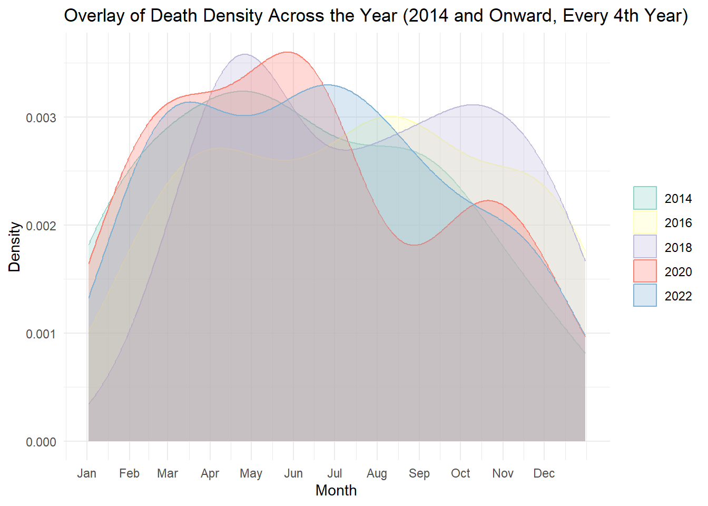

This is data about deaths in a national park, so first lets get the dataset and learn more about it:
# Load necessary librarieslibrary(dplyr)
Attaching package: 'dplyr'
The following objects are masked from 'package:stats':
filter, lag
The following objects are masked from 'package:base':
intersect, setdiff, setequal, union
library(ggplot2)
Warning: package 'ggplot2' was built under R version 4.3.2
library(lubridate)
Attaching package: 'lubridate'
The following objects are masked from 'package:base':
date, intersect, setdiff, union
#get the datadata <-read.csv("../national_parks_with_coordinates.csv", colClasses =c("Incident.Date"="character"))#data <- read.csv("../national_parks_with_coordinates.csv")
# Convert the Date column from mm/dd/yyyy format to a proper Date typedata$Incident.Date <-mdy(data$Incident.Date)# Check for any conversion issuessummary(data$Incident.Date)
Min. 1st Qu. Median Mean 3rd Qu. Max.
"2007-01-01" "2014-03-24" "2017-07-19" "2017-02-02" "2020-09-25" "2024-06-29"
Let’s see some info
# View the structure of the dataset#str(data)# Get a summary of the datasetsummary(data)
Incident.Date Park.Name Cause.of.Death
Min. :2007-01-01 Length:4635 Length:4635
1st Qu.:2014-03-24 Class :character Class :character
Median :2017-07-19 Mode :character Mode :character
Mean :2017-02-02
3rd Qu.:2020-09-25
Max. :2024-06-29
Cause.of.Death.Group...Used.in.the.NPS.Mortality.Dashboard..
Length:4635
Class :character
Mode :character
Intent Outcome Sex Age.Range
Length:4635 Length:4635 Length:4635 Length:4635
Class :character Class :character Class :character Class :character
Mode :character Mode :character Mode :character Mode :character
Activity temperature precipitation humidity
Length:4635 Mode:logical Mode:logical Mode:logical
Class :character NA's:4635 NA's:4635 NA's:4635
Mode :character
date latlong
Length:4635 Length:4635
Class :character Class :character
Mode :character Mode :character
#Appendix# Specify the category of interestcategory_of_interest <-"Suicide"# Create a new logical columndata$compar_Suic <-ifelse(data$Cause.of.Death == category_of_interest, "Suicide", "Other")# Create a table to compare countscomparison_counts <-table(data$compar_Suic)# Print the comparison tableprint(comparison_counts)
Other Suicide
3987 648
#Appendix# Create the comparison columndata$compar_Suic <-ifelse(data$Cause.of.Death =="Suicide", "Suicide", "Other")# Convert compar_Suic to a factor with specified levelsdata$compar_Suic <-factor(data$compar_Suic, levels =c("Suicide", "Other"))data$Year <-substr(data$date, 1, 4)# Create the combined histogramggplot(data, aes(x = Year, fill = compar_Suic)) +geom_bar(position ="stack") +# Use "dodge" for side-by-side barstheme_minimal() +labs(title ="Counts of Causes of Death by Year",x ="Year",y ="Count",fill ="Cause of Death") +scale_fill_manual(values =c("Suicide"="blue", "Other"="orange"))
#Appendix# Convert your Date column to Date type if it's not already#data$Incident.Date <- as.Date(data$Incident.Date)# Extract the year from the Date column# Now proceed with your previous steps to extract year and summarize incidentsdata <- data |>mutate(Year =year(Incident.Date))data_summary <- data |>group_by(Year, Intent) |>summarize(Incident_Count =n())
`summarise()` has grouped output by 'Year'. You can override using the
`.groups` argument.
#Appendixlibrary(ggplot2)library(dplyr)library(lubridate)# Convert your Date column to Date type if it's not alreadydata$Incident.Date <-as.Date(data$Incident.Date)# Create a "day of the year" column (1 to 365/366)data <- data %>%mutate(DayOfYear =yday(Incident.Date))
#graph for paper# Filter every 4th year starting from 2014 (2014, 2018, 2022, etc.)data_filtered <- data |>filter(Cause.of.Death =="Suicide") |>filter(Year %%2==0& Year !=2024)# Plot density of incidents compressed into a single year's time, with month labelsggplot(data_filtered, aes(x = DayOfYear, color =as.factor(Year), fill =as.factor(Year))) +geom_density(alpha =0.3) +scale_x_continuous(breaks =c(1, 32, 60, 91, 121, 152, 182, 213, 244, 274, 305, 335), # Approx. days for each month startlabels =c("Jan", "Feb", "Mar", "Apr", "May", "Jun", "Jul", "Aug", "Sep", "Oct", "Nov", "Dec")) +labs(title ="Overlay of Death Density Across the Year (2014 and Onward, Every 4th Year)", x ="Month", y ="Density") +theme_minimal() +theme(legend.title =element_blank()) +scale_fill_brewer(palette ="Set3") +# Optional: choose a color palette for better distinctionscale_color_brewer(palette ="Set3") # Optional: matching color palette

#The graph is fun, but only shows every other year, it would be much nicer to see the table# Create the data_wiki dataframe with seasonal separation based on months 1-6 and 7-12data_summary <- data |>filter(Cause.of.Death =="Suicide") |>#filter(Sex == "Male") |>mutate(Year =year(Incident.Date), # Extract the yearSeason =case_when(month(Incident.Date) %in%1:6~"First Half (Jan - Jun)", # Months 1-6month(Incident.Date) %in%7:12~"Second Half (Jul - Dec)", # Months 7-12TRUE~NA_character_ )) %>%filter(!is.na(Season)) |># Remove any rows without a seasongroup_by(Year, Season) |># Group by Year and Seasonsummarise(Incident_Count =n(), .groups ="drop") # Count incidents# Step 2: Check for Normality in Incident Countsnormality_test <-shapiro.test(data_summary$Incident_Count)print(normality_test)
Shapiro-Wilk normality test
data: data_summary$Incident_Count
W = 0.9776, p-value = 0.8874
# Step 3: Perform Statistical Testsif (normality_test$p.value >0.05) {# Run an unpaired t-test if normal t_test_result <-t.test(Incident_Count ~ Season, data = data_summary)print(t_test_result)} else {cat("Data is not normally distributed; consider using the Mann-Whitney U test.\n")}
Welch Two Sample t-test
data: Incident_Count by Season
t = 0.70555, df = 15.749, p-value = 0.4908
alternative hypothesis: true difference in means between group First Half (Jan - Jun) and group Second Half (Jul - Dec) is not equal to 0
95 percent confidence interval:
-4.437006 8.855188
sample estimates:
mean in group First Half (Jan - Jun) mean in group Second Half (Jul - Dec)
31.90909 29.70000
# Run a Mann-Whitney U test (Wilcoxon test) to compare the mediansmann_whitney_result <-wilcox.test(Incident_Count ~ Season, data = data_summary)
Warning in wilcox.test.default(x = DATA[[1L]], y = DATA[[2L]], ...): cannot
compute exact p-value with ties
print(mann_whitney_result)
Wilcoxon rank sum test with continuity correction
data: Incident_Count by Season
W = 66.5, p-value = 0.4371
alternative hypothesis: true location shift is not equal to 0
#graph it!library(ggplot2)# Create a histogram for data_wikiggplot(data_summary, aes(x = Year, y = Incident_Count, fill = Season)) +geom_bar(stat ="identity", position ="identity", alpha =0.5) +# Stacked barslabs(title ="Incident Counts by Season (First Half vs. Second Half of Year)",x ="Year",y ="Incident Count") +theme_minimal() +scale_fill_manual(values =c("First Half (Jan - Jun)"="blue", "Second Half (Jul - Dec)"="red")) +theme(legend.title =element_blank())
#sign test:# Reshape data_summary to have counts for both seasons in separate columnslibrary(dplyr)library(tidyr)data_wide <- data_summary %>%pivot_wider(names_from = Season, values_from = Incident_Count, values_fill =0)# Create a vector of differences between summer and winter countsdifferences <- data_wide$`First Half (Jan - Jun)`- data_wide$`Second Half (Jul - Dec)`# Remove NA values and zero differencesvalid_differences <- differences[differences !=0]# Count positive differencesnum_positive <-sum(valid_differences >0)# Total valid pairsn <-length(valid_differences)# Check that we have valid pairsif (n >0&& num_positive <= n) {# Run the sign test sign_test_result <-binom.test(x = num_positive, n = n, p =0.5)# Display the resultprint(sign_test_result)} else {cat("No valid pairs for the sign test.\n")}
Exact binomial test
data: num_positive and n
number of successes = 6, number of trials = 10, p-value = 0.7539
alternative hypothesis: true probability of success is not equal to 0.5
95 percent confidence interval:
0.2623781 0.8784477
sample estimates:
probability of success
0.6
#check normalacy# Calculate the differences between the two periodsdata_wide <- data_wide %>%mutate(Difference = month7_12 - month1_6)# Run the Shapiro-Wilk test on the differencesshapiro_test <-shapiro.test(data_wide$Difference)# Print the resultsshapiro_test
Shapiro-Wilk normality test
data: data_wide$Difference
W = 0.95484, p-value = 0.7061
#t-test# Perform the paired t-test on the two groupspaired_t_test <-t.test(data_wide$month1_6, data_wide$month7_12, paired =TRUE)# Print the resultspaired_t_test
Paired t-test
data: data_wide$month1_6 and data_wide$month7_12
t = 1.4932, df = 10, p-value = 0.1662
alternative hypothesis: true mean difference is not equal to 0
95 percent confidence interval:
-2.416122 12.234303
sample estimates:
mean difference
4.909091
#permutation test# Set the number of permutationsnum_permutations <-10000# Observed statistic (median of differences in the original data)observed_statistic <-median(data_wide$month7_12 - data_wide$month1_6)# Initialize a vector to store the permuted statisticspermuted_statistics <-numeric(num_permutations)# Run the permutation testfor (i in1:num_permutations) {# Create a copy of the original data permuted_data <- data_wide# Randomly swap values between month1_6 and month7_12 for each row with 50% probability swap <-rbinom(nrow(permuted_data), 1, 0.5) ==1# Perform the swap where necessary permuted_data[swap, c("month1_6", "month7_12")] <- permuted_data[swap, c("month7_12", "month1_6")]# Calculate the permuted statistic (median of differences) permuted_statistics[i] <-median(permuted_data$month7_12 - permuted_data$month1_6)}# Calculate the p-value as the proportion of permuted statistics that are as extreme or more extreme than the observed onep_value <-mean(abs(permuted_statistics) >=abs(observed_statistic))# Output the resultcat("Observed Statistic:", observed_statistic, "\n")
Observed Statistic: -4
cat("P-value from Permutation Test:", p_value, "\n")